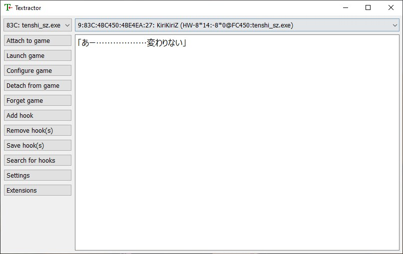
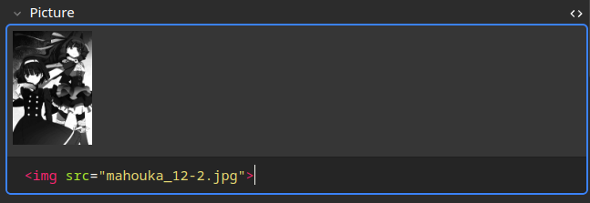

Minage
Deck de minage
- Choisir un type de note pour Anki
- Utiliser l'outil d'ordonnage de fréquence de Marv
- Configuration pour visual novel
- Configuration pour anime
- Configuration pour light novels et romans
- Configuration pour manga
Si tout s'est bien passé dans la section précédente, vous devriez être capable de scanner des mots en japonais avec Yomitan. Cette section va discuter de tout ce que vous aurez besoin pour mettre en place une expérience de minage adéquate. Le minage est généralement quelque chose que l'on fait après avoir fini un deck de vocabulaire comme Kaishi 1.5k, mais certaines personnes mettent en place un deck de minage avant, ce n'est pas un problème. C'est à vous de choisir, mais je vous conseille quand même de finir Kaishi d'abord car ça ne prendra pas beaucoup de temps dans l'ensemble. Vous pouvez et devriez commencer à vous immerser dans du contenu japonais depuis le premier jour, mais vous ne comprendrez mieux qu'après avoir mémorisé un peu de vocabulaire.
Préparer Anki et Yomitan pour le minage
Dans cette section, on discute de différentes notes de carte Anki, on en installe une et on met en place Yomitan pour le minage.
Choisir un type de note pour Anki
Il y a plusieurs types de notes disponibles pour les étudiants du japonais. Les plus populaires sont notés sur cette page Nous allons utiliser la fork d'Arbyste de jp-mining-note. Malheureusement, la personne qui s'occupait à l'origine de ce type de note a disparu de la circulation, pour l'instant Arbyste maintient la note en question. Pour l'installer, commencez par lire la préface. Ensuite, suivez les instructions ici et si vous n'utilisez pas mes paramètres, vérifiez que votre Yomitan est modifié en conséquence.
Utiliser l'outil d'ordonnage de fréquence de Marv
L'outil d'ordonnage de fréquence de Marv nous permet d'utiliser plusieurs dictionnaires de fréquence pour obtenir la moyenne harmonique de plusieurs dictionnaires. Cette moyenne peut alors être utilisé pour réordonner nos nouvelles cartes par fréquence. Si vous avez importé mes paramètres Yomitan, vous n'aurez rien à changer dans Yomitan. Si vous avez importé mes plugins, vous n'aurez rien à faire. Si ce n'est pas le cas ou si vous voulez changer le nom du deck, vérifiez la configuration du plugin AutoReorder en allant sur Tools > Add-ons et ensuite en faisant un double-clic sur AutoRedorder. Cela va ouvrir un fichier de configuration et vous pourrez changer le nom du deck (qui devrait être Mining par défaut si vous avez importé mes plugins) à ce que vous voulez qu'il soit.

Du choix de vos contenus d'immersion
Il y a plusieurs types de contenus japonais que vous pouvez utiliser pour l'immersion. Voici quelques choix populaires: les visual novels, les light novels (ou les romans tout court), les vidéos YouTube, la télévision japonais, les podcasts, la musique, les jeux vidéos. Le meilleur pour vous sera le contenu sur lequel vous pourrez passer beaucoup de temps. Je vous suggère d'en choisir au moins deux: un basé sur la compréhension écrite, un basé sur la compréhension orale. De tous les choix possibles, mon préféré pour un début est les visual novels.
Je préfère les visual novels car ils sont complets: il y a une image, une phrase complète souvent récitée par un(e) professionnel(le), le tout en même temps. C'est donc généralement sympa à regarder, vous lisez et écoutez en même temps et le progrès est facile à observer du à la nature vidéoludique d'un visual novel (généralement abbrévié VN). Un problème important avec les visual novels est que la plupart contiennent du contenu pour adulte, notamment sexuel. Plusieurs visual novels très populaire n'en ont pas, et il existe aussi des versions pour tous les âges. En général, les visual novels sont fun et super pour l'immersion. Prêtez attention au fait que la majorité des visual novels vous demanderont d'utiliser des paramètres régionaux japonais. Vous pouvez utiliser le Locale Emulator pour éviter de devoir changer directement vos paramètres ou vous pouvez créer des raccourcis avec cet outil.
Cela ne veut pas dire que les autres contenus sont mauvais, c'est même l'opposé en fait. Idéalement, vous vous exposez à une large variété de contenu pour la compréhension orale et écrite, des visual novels et articles Wikipédia en tout genre à des classiques de la littérature japonaise, des anime et des articles de journaux. Souvenez-vous, la partie la plus importante est votre intérêt pour ce que vous consommez, sinon il sera extrêmement difficile de créer une habitude de lecture quotidienne. Bref, passons à la suite.
Configurations de minage spécifiques
Cette partie du guide d'installation discute de plusieurs configurations possibles de minage. Il y en a un pour les visual novels, un pour les anime, un pour les light novels ou les romans en général et finalement un pour les manga.
Configuration pour visual novels
Dans cette section, nous installons tous les outils qu'il va nous falloir pour miner des VNs. Ce guide part du principe que vous êtes sur Windows. Un guide pour Linux se trouve ici.
Textractor
La première étape est d'obtenir un extracteur de texte. C'est un outil qui vous permet d'extraire le texte du jeu dans votre navigateur web pour utiliser Yomitan pour le minage. L'extracteur de text recommandé de nos jours est Textractor.

Vous pouvez le télécharger ici. Téléchargez la dernière version et lancez le fichier .exe. Ensuite, ouvrez Textractor et allez sous Extensions. Si vous ne voyez pas Textractor-Sender, téléchargez le ici et rajouter le fichier .xdll dans vos extensions en pressant clic-droit sur la liste.
{kind=link}
Une fois ceci fait, nous pouvons maintenant extraire le texte. Pour ce faire, commencer par selectionner un processus en cliquant sur la boîte vide en haut à gauche et en cherchant votre visual novel.

Une fois ceci fait, cliquer simplement dans votre visual novel pour aller à la frame suivante. Vous pouvez alors cliquer sur la barre supérieure (où il y a marqué Console, dans Textractor) et cherchez jusqu'à ce que vous trouviez une option qui a le texte de cette ligne du VN, et rien d'autre.

{kind=link}
exSTATic
Nous avons maintenant besoin d'une méthode pour acheminer le texte dans votre navigateur web. Il y a deux manières de faire ça: copier le presse-papier ou utiliser des WebSockets. La deuxième option est généralement plus propre et conduit à moins d'erreurs. Nous allons utiliser exSTATic que vous devriez pouvoir trouver ici pour Firefox et là pour Google Chrome. Vous pouvez aussi suivre les instructions ici. Une fois cette extension installée, vous pouvez ouvrir la page principale que je vous suggère de la mettre dans vos favoris car c'est là que vous allez faire votre minage.
{kind=link}
ShareX
Finalement, nous avons besoin d'un outil pour extraire l'image et (si besoin ou désiré) l'audio de la phrase que vous êtes en train de miner. Cet outil est ShareX. Pour commencer, installez le logiciel puis importer mes paramètres. Pour ce faire, aller dans Application settings... sur la gauche (notez que le thème pourrait être différent):

Une fois ceci fait, aller dans Settings > Import... et utiliser mon fichier de paramètres:

Si vous allez dans le menu principal, vous devriez maintenant voir ceci:

Si vous voulez utiliser un autre thème (j'utilise le thème Dark par exemple), vous pouvez aller dans Applications settings... > Theme:

Retournons maintenant sur la gauche et cliquons sur Hotkey settings....

Il y a quatre options. Le premier est Audio (Anki), qui nous permet d'enregistrer de l'audio et de l'avoir directement envoyé dans le dossier collection.media d'Anki. Cela implique que vous pouvez miner une carte et enregistrer un bout d'audio juste après, et que cet audio enregistré sera automatiquement envoyé dans le champ audio du deck de minage. C'est utile par exemple si vous voulez enregistrer l'audio d'une voix dans votre visual novel par exemple. La deuxième option nous permet de prendre une capture d'écran en découpant une partie de l'écran ce qui est utile quand on lit des manga. Les deux options sont ce que nous avons besoin pour les visual novels. La troisième option capture l'image du VN and la met dans le champ image de notre nouvelle carte qu'on vient de miner. La quatrième option fait la même chose, mais rend l'image flou, pour peu que vous utilisiez mes paramètres pour Yomitan. C'est utile si la scène du visual novel n'est pas approprié pour tous les âges ou que vous ne voulez tout simplement pas que les autres puissent la voir sans que vous cliquiez explicitement dessus.
Malheureusement, si vous essayez d'enregistrer de l'audio ou de prendre une capture d'écran maintenant, cela ne va pas fonctionner pour deux raisons:
- Le dossier
collection.median'est pas le même pour vous et moi. - Nous n'avons rien pour enregistrer de l'audio.
Réglons d'abord le premier problème. Commencez par ouvrir la roue dentée à droite de chaque option ci-dessus: Audio, screenshot, etc. Cela ouvre le menu suivant:
{kind=link}
Notez la partie floue en bas (qui ne devrait pas être floue sur votre ordinateur). C'est mon chemin d'accès au dossier collection.media. Vous devez le changer pour le vôtre. La première partie est votre nom d'utilisateur Windows, le deuxième votre nom de profil Anki. Vous pouvez aussi simplement taper %appdata% dans la barre de recherche, pressez la touche Enter et trouver votre dossier collection.media directement de cette manière, généralement dans Roaming > Anki2. Dans les deux cas, ré-écrivez le chemin d'accès pour chacune des quatre options. Cela devrait ressembler à ça (avec des USERNAME et PROFILE différents):
{kind=link}
Cela règle le premier problème. Pour régler le second, cliquer sur la roue dentée à côté de l'option Audio dans Hotkey settings... > Audio. Ensuite, aller sur Screen recorder:

Ensuite, ouvrez Screen recording options... et cliquer sur Install recorder devices. Une fois ceci fait, vérifier que Video Source: a l'option None et Audio Source: a l'option virtual-audio-capturer:

Vous pouvez maintenant quitter cet écran et vous devriez avoir une installation fonctionnelle de ShareX. Si vous avez une souris avec des boutons externes, je vous conseille fortemment d'utiliser les scripts de Xelieu. Pour les utiliser, installer AutoHotKey. Une fois que vous voulez utiliser les scripts, faites un double-clic sur le script en question. Cela vous permettra d'utiliser les raccourcis Screenshot et Audio avec votre souris. Sur ma souris, le bouton du haut utilise le raccourci Screenshot (VN) et le bouton du bas utilise le raccourci Audio (Anki).
Récapitulatif pour le minage des visual novels
La configuration des visual novels est assez longue avec plusieurs parties, donc voici un petit récapitulatif.
Pour miner un mot, il faut ouvrir le VN, Textractor, la page principale de exSTATic et ShareX. Suivez les étapes de la section sur Textractor pour obtenir le texte extrait sur la page principale d'exSTATic, et utiliser Yomitan pour miner des mots en cliquant sur le gros bouton vert dans la petite fenêtre qui s'ouvre quand vous scannez le mot. Une fois ceci fait, vous pouvez ajouter une capture d'écran du VN avec soit Shift+Alt+C (Shift+Alt+X si vous voulez le flou en plus) ou votre bouton de souris si vous utilisez les scripts de Xelieu. Si la phrase est récitée oralement et que ça ne vous dérange pas de prendre un peu de temps à la ré-entendre, vous pouvez enregistrer l'audio avec soit Shift+Alt+A soit l'autre bouton de la souris. Félicitations, vous avez miné un mot d'un visual novel!
Configuration pour anime
Cette section vous donnera des outils pour obtenir la meilleure expérience de minage possible avec des anime.
asbplayer
Il y a plusieurs configurations possibles comme ce script MPV de Anacreon ou Animebook. Toutes ces configurations sont bonnes mais mon option préférée est de loin asbplayer. Cette configuration requiert que vous ayez le fichier anime ainsi que les sous-titres quelque part sur votre PC. Pour l'instant, cette configuration ne fonctionne bien qu'avec Google Chrome (ou tout autre navigateur basé sur Chromium) à cause de problèmes audio. Si vous désirez utiliser utiliser cette configuration avec un site de streaming, utiliser l'extension Chrome.
Pour miner depuis un anime, vous devez d'abord vérifier que les paramètres de asbplayer sont corrects pour votre deck de minage. Voici les étapes nécessaires:
- Ouvrez la page principale et cliquer sur la roue dentée en haut à droite où il y a marqué
Settings. - Remplissez les cases pour votre Deck (le mien s'appelle
MiningAnimemais le votre sera sûrementMining) et Note Type (le mien estJP Mining Note). - Remplissez les cases pour votre Audio Field (le mien est
SentenceAudio) et Image Field (le mien estPicture). - Sous
Miningà gauche, cliquez surUpdate last card. - (Facultativement) Changez votre police pour les sous-titres sous
Subtitle Appearance > Subtitle Font Family. - Vérifiez que votre plugin
AnkiConnectsoit bien paramétré dans Anki, pour ce faire regarder cette vidéo.
Par exemple, voici mes paramètres:
{kind=link}
Vous pouvez maintenant miner des anime. Pour ce faire, suivez ces étapes:
- Glissez-déposez votre fichier anime et le fichier de sous-titres ensemble sur la page principale.
- Scannez le mot que vous voulez miner sur les sous-titres et ajouter le à Anki avec Yomitan.
- Pressez
Ctrl+Shift+Upour ajouter automatiquement une capture d'écran et l'audio de la phrase à votre carte. Vous pouvez changer le raccourci utilisé dansSettings > Keyboard Shortcuts > Update last-created Anki cardsi vous le désirez.
Et voilà, le mot que vous avez ajouté avec Yomitan a maintenant un screenshot de l'anime et l'audio de la phrase utilisée.
That's it, your word added using Yomitan now has the screenshot from the anime and the sentence audio from it!
Configuration pour light novels et romans
Cette section explique comment miner des light novels ou des romans.
ッツreader
Le meilleur outil pour le minage de light novels est sans aucun douteッツreader. Il est nécessaire d'utiliser des fichiers HTML/EPUB ce qui est le type de fichier le plus standard pour les romans et light novels de toute manière. Vous pouvez simplement déposer-glisser le fichier sur la page principale et commencer à lire. Vous pouvez alors utiliser Yomitan pour miner. Malheureusement, il n'est pas possible d'obtenir l'audio d'une phrase de cette manière. Vous pouvez rajouter des images si vous le voulez. Voici comment je le fais personnellement:
- J'ai un deck séparé pour le minage de light novels que j'appelle
MiningLN. Quand je veux miner des light novels, je change l'optionAnki > Configure card format... > Deckdans Yomitan en mettantMiningLN, de cette manière:

- Quand je commence un nouveau light novel, j'ajoute l'image de couverture (et potentiellement d'autres images du light novel) dans une carte Anki en glissant-déposant l'image sur le champ
Picturedans Anki (le champ de l'image). Voici un exemple avec le douzième volume de魔法科:
{kind=link}
- Cliquer sur le
<>sur la droite pour ouvrir les détails. Cela va vous donner quelque chose de la forme<img src="">. Copier ce texte en le selectionnant avecCtrl+CouClic-droit > Copy. En continuant l'exemple ci-dessus, on a:

{kind=link}
- Sélectionnez toutes les cartes où vous voulez rajouter cet image dans le navigateur de Anki (le browser). Si c'est toutes les cartes, pressez simplement sur une carte puis cliquer
Ctrl+A. - En haut à gauche, cliquer sur
Edit > Batch Edit...(souvenez-vous d'installer le plugin de Batch Editing si ce n'est pas déjà fait). - Cela ouvre une fenêtre. Collez le nom de l'image que vous venez de copier dans le champ et vérifiez bien de changer le champ pour le champ de l'image de votre deck ou cela détruira la définition du mot! Dans mon cas, le champ s'appelle simplement
Picture. Finalement, pressez surReplace. Vous devriez avoir ça:

- Si la manipulation ci-dessus a réussi, toutes vos cartes devraient maintenant avoir l'image que vous vouliez rajouter. Vous pouvez maintenant remettre ces cartes dans votre deck de minage de base. Cliquer simplement sur une des cartes puis
Ctrl+Apour toutes les sélectionner (ou sélectionner les à la main), puisClic-droit > Change Deck. Cela ouvre une fenêtre où vous pouvez sélectionner le deck de minage standard, dans mon casMining.
Dans le cas des light novels, j'ajoute généralement l'image de couverture jusqu'à trouver une nouvelle image. Quand cette nouvelle image apparaît, chaque nouveau mot à partir de cette image l'utilise. Répétez jusqu'à finir le livre. Vous pouvez utiliser cette technique avec n'importe quelle sorte d'image et n'importe quelle sorte de carte.
Configuration pour manga
Et maintenant un de mes contenus préférés, les manga.
mokuro
Le minage de manga requiert généralement un outil de reconnaissance optique de caractères (OCR en anglais) pour extraire le texte d'un cadrage (panel en anglais). Mon outil préféré pour ça estmokuro. Il y a deux, disons trois façons de l'utiliser. Vous pouvez l'utiliser comme un OCR sur les manga que vous avez sur votre ordinateur, auquel cas suivez ce guide. Notez que cela requiert une certaine aisance technique, cependant. Vous pouvez aussi directement importer vos mangas dans le lecteur, ce qui requiert aussi d'avoir les fichiers manga. Finalement, l'option que je préfère est d'utiliser le catalogue directement.
Simplement choisissez un des manga disponibles et commencez à lire. Cliquez sur le manga qui vous intéresse pour l'importer et ensuite scannez les mots avec Yomitan. Voici un exemple de ３月のライオン, notez la partie à droite avec un font différent puisque je suis en train de le scanner:
{kind=link}
Vous pouvez maintenant utiliser Yomitan pour miner le mot. Pour avancer dans le manga, vous pouvez utiliser les flèches directionnelles gauche et droite. Une fois que vous avez miné un mot, vous pouvez utiliser ShareX pour sélectionner et découper un panel du manga et l'ajouter à votre mot. J'utilise Shift+Alt+S pour découper le panel. Une fois ceci fait, votre carte Anki devrait avoir le panel dans le champ Picture, pour peu que vous utilisez mes paramètres.
Vous êtes maintenant prêt(e) à miner du contenu japonais ! N'hésitez pas à visiter la page de recommandations pour voir quoi miner.